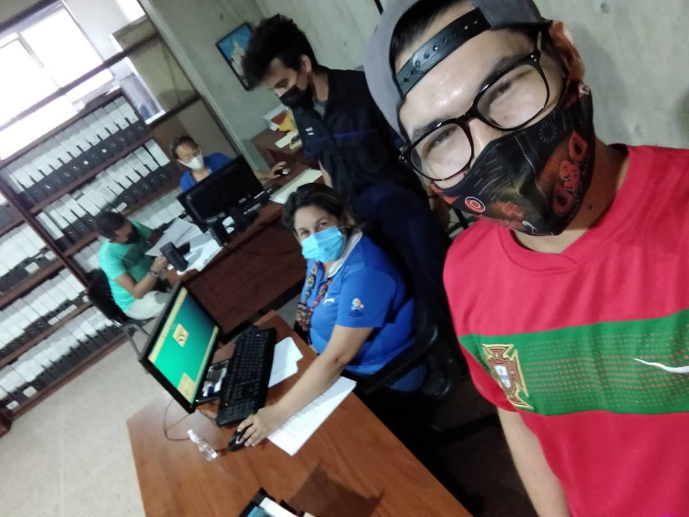

¿Qué es un Acceso Remoto?
Es la tecnología que permite a los empleados de la empresa acceder al servidor desde dispositivos que no se encuentran en el mismo entorno. Este modelo no requiere una conexión física entre las computadoras, ya que el proceso se realiza a través de una red virtual. De forma simplificada, el acceso remoto permite a los empleados acceder a datos, correos electrónicos y otro tipo de documentos a través de cualquier dispositivo, como también posibilita que el soporte técnico de una empresa manipule una máquina y solucione un problema sin estar presente en el misma lugar.
Función Acceso Remoto
El acceso remoto funciona desde una red virtual que permite la comunicación y conexión con dispositivos como computadoras portátiles, tabletas y teléfonos inteligentes a un servidor. Los accesos remotos permiten, mejorar la productividad de los empleados, Optimizar costos y lo más importante contribuye a la satisfacción del cliente.
Herramienta de acceso remoto
AnyDesk ofrece acceso remoto seguro y fiable. Es la herramienta ideal para profesionales de la informática y usuarios en movimiento. Cuenta con soporte multiplataforma y sistemas operativos Windows, Free BSD, MacOS, iOS, Android y Linux. Entre sus características principales se encuentran: Colaboración online, Transferencia de archivos, Sin necesidad de instalación, Personalización, Grabación de sesiones, Red propia.
Relación PSTIV
Al hacer uso o creación de un acceso remoto, esté permité a los empleados del ICEY no hacer registro de los proyectos de los cultores a traves de las PC que ofrece el mismo en sus instalaciones, sino que pormedio de la misma pueden acceder hacer registro desde cualquier parte del Estado permitiendo así una comodidad y satisfacción para el ingreso de proyectos y eventos que presenten los mismos a la sede principal, más aun que la que el objetivo de este investiación es la realizacñon de una aplicación informática.
